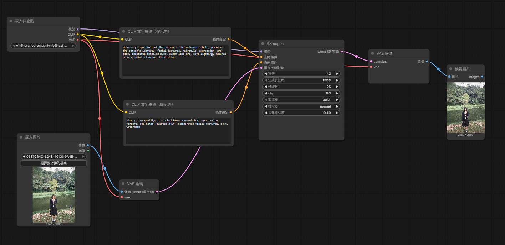

anime-style portrait of the person in the reference photo, preserve the person's identity, facial features, hairstyle, expression, and pose, beautiful detailed eyes, clean line art, soft lighting, natural colors, detailed anime illustration
blurry, low quality, distorted face, asymmetrical eyes, extra fingers, bad hands, plastic skin, exaggerated facial features, text, watermark
在這次的課程中，我學到了使用comfy 的方法，並且生成自己的圖片，在做作業的過程裡，我遇到了很多不同的問題，例如：提示詞有點不知道該怎麼寫、自己的生成出來的圖片與原圖有著極大的差異，並且生成的圖片很不自然協調，我覺得我可以再繼續加強與調整我的想法，讓我最終能生成出一張比較可以看的圖片。